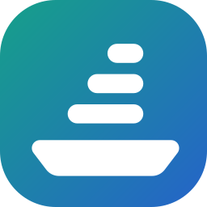

<!doctype html>
<html lang="en"><head><meta charset="utf-8"><meta name="viewport" content="width=390">
<!--
  Search on the phone app (SHIP-928, epic SHIP-905): the screen behind the top bar's search icon, and the quick ways to reach it
  (the phone's answer to the web's Ctrl/⌘+P). Results match the web's quick search popup. Notes and decisions: search.md.
  ?state=<id>&theme=light|dark, ?list for ids.
-->
<link rel="stylesheet" href="app.css"><script src="app.js"></script>
<style>
/* Search field in the top bar: back, the field, a mic for spoken search words */
.sbar { height: var(--app-bar); flex: none; display: flex; align-items: center; gap: 4px; padding: 0 8px 0 4px; background: var(--color-surface); border-bottom: 1px solid var(--color-border); }
.sfield { flex: 1; min-width: 0; height: 38px; border-radius: 10px; background: var(--color-surface-2); display: flex; align-items: center; gap: 8px; padding: 0 4px 0 10px; color: var(--color-muted); }
.sfield .q { flex: 1; min-width: 0; color: var(--color-text); white-space: nowrap; overflow: hidden; text-overflow: ellipsis; font-size: var(--app-text); }
.sfield .q.ph { color: var(--color-muted); }
.sfield .q .caret { display: inline-block; width: 2px; height: 18px; margin-left: 1px; vertical-align: -3px; background: var(--color-accent); }
.sfield .q.voiced { color: var(--color-text); }
.sfield .q.voiced svg { color: var(--voice); vertical-align: -3px; margin-right: 4px; }
.sfield .fmic { width: 32px; height: 32px; border-radius: 8px; display: grid; place-items: center; color: var(--voice); flex: none; }
.sfield .fmic.live { background: var(--color-danger); color: #fff; }
.sfield .clr { width: 26px; height: 26px; display: grid; place-items: center; color: var(--color-muted); flex: none; }
.cancel { padding: 0 8px; height: var(--app-touch); color: var(--color-accent); font-weight: 500; flex: none; }

/* Scope and filter chips under the field */
.subbar.chips { padding-top: 8px; }
.chip svg.i { color: var(--color-muted); }
.chip.on svg.i { color: inherit; }

/* Result rows: type, key, title with the match marked, then the where line or the snippet that matched */
mark { background: color-mix(in srgb, var(--voice) 22%, transparent); color: inherit; border-radius: 3px; padding: 0 1px; }
.res { display: flex; gap: 12px; align-items: flex-start; padding: 11px var(--app-gutter); border-bottom: 1px solid var(--color-border); background: var(--color-surface); }
.res:last-child { border-bottom: 0; }
.res .type { margin-top: 2px; }
.res .main { flex: 1; min-width: 0; }
.res .t { font-size: var(--app-text); font-weight: 500; line-height: 1.3; overflow-wrap: anywhere; }
.res .m { display: flex; align-items: center; gap: 6px; margin-top: 4px; font-size: var(--app-text-sm); color: var(--color-muted); min-width: 0; }
.res .m .where { min-width: 0; overflow: hidden; text-overflow: ellipsis; white-space: nowrap; }
.res .m > :not(.where) { flex: none; }
.res .snip { margin-top: 6px; font-size: var(--app-text-sm); color: var(--color-text); padding: 6px 9px; border-radius: 8px; background: var(--color-surface-2); overflow-wrap: anywhere; }
.res .snip .in { display: block; font-size: var(--app-text-xs); color: var(--color-muted); margin-bottom: 2px; }
.res.closed .t { color: var(--color-muted); }
.res .n { width: 22px; height: 22px; border-radius: 50%; display: grid; place-items: center; background: var(--voice-soft); color: var(--voice); font-size: var(--app-text-xs); font-weight: 700; flex: none; margin-top: 1px; }
.res .ic2 { width: 22px; height: 22px; display: grid; place-items: center; color: var(--color-muted); flex: none; margin-top: 1px; }
.res .pk { flex: none; }
.res .pkey { min-width: 34px; height: 20px; font-size: 9.5px; }
.more { display: block; padding: 10px var(--app-gutter); font-size: var(--app-text-sm); color: var(--color-accent); background: var(--color-surface); border-top: 1px solid var(--color-border); }

/* The web's footer note ("Top 8 items · keep typing to narrow"), and action rows */
.qs-note { padding: 10px var(--app-gutter) 0; font-size: var(--app-text-xs); color: var(--color-muted); text-align: right; }
.act-row { align-items: center; }
.act-row .glyph { width: 22px; text-align: center; color: var(--color-muted); font-size: 16px; flex: none; }
.act-row .t { font-weight: 500; }

/* Start (nothing typed): recent searches as plain lines */
.rq { display: flex; align-items: center; gap: 12px; height: 44px; padding: 0 var(--app-gutter); border-bottom: 1px solid var(--color-border); background: var(--color-surface); font-size: var(--app-text); }
.rq:last-child { border-bottom: 0; }
.rq svg { color: var(--color-muted); }
.rq .grow { flex: 1; min-width: 0; overflow: hidden; text-overflow: ellipsis; white-space: nowrap; }
.rq .via { font-size: var(--app-text-xs); color: var(--voice); display: inline-flex; gap: 3px; align-items: center; }
.tryline { display: flex; align-items: flex-start; gap: 8px; margin: 14px var(--app-gutter) 0; font-size: var(--app-text-sm); color: var(--color-muted); }
.tryline svg { color: var(--voice); margin-top: 1px; }
.tryline b { color: var(--color-text); font-weight: 500; }

/* A stylised phone keyboard (not part of the design, just where it sits) */
.kb { flex: none; height: 291px; background: color-mix(in srgb, var(--color-surface-2) 70%, var(--color-bg)); border-top: 1px solid var(--color-border); padding: 8px 3px calc(var(--app-home) + 4px); display: flex; flex-direction: column; gap: 11px; position: relative; z-index: 5; }
.kb .r { display: flex; justify-content: center; gap: 6px; }
.kb i { display: grid; place-items: center; width: 32px; height: 42px; border-radius: 5px; background: var(--color-surface); box-shadow: 0 1px 0 var(--color-border); font: 400 18px/1 var(--font-sans); font-style: normal; color: var(--color-text); }
.kb i.w { width: 44px; font-size: 13px; background: color-mix(in srgb, var(--color-surface-2) 60%, var(--color-border)); }
.kb i.sp { width: 180px; font-size: 14px; color: var(--color-muted); }
.kb i.go { width: 88px; font-size: 14px; background: var(--color-accent); color: var(--color-accent-fg); }

/* Strip at the top of results that came from a spoken sentence */
.heardbar { display: flex; gap: 10px; align-items: flex-start; padding: 10px var(--app-gutter); background: var(--voice-soft); border-bottom: 1px solid var(--color-border); font-size: var(--app-text-sm); }
.heardbar svg { color: var(--voice); margin-top: 1px; }
.heardbar .grow { flex: 1; min-width: 0; }
.heardbar .grow i { color: var(--color-muted); }
.heardbar button { color: var(--color-accent); font-weight: 600; white-space: nowrap; height: 22px; }
.heardbar.offline { background: var(--color-surface-2); }
.heardbar.offline svg { color: var(--color-muted); }

/* Backlog rows behind the voice states */
.prow { display: flex; gap: 12px; align-items: flex-start; padding: 12px var(--app-gutter); border-bottom: 1px solid var(--color-border); background: var(--color-surface); }
.prow .rank { width: 18px; text-align: right; color: var(--color-muted); font-size: var(--app-text-sm); padding-top: 2px; flex: none; }
.prow .main { flex: 1; min-width: 0; }
.prow .t { font-weight: 500; line-height: 1.3; }
.prow .m { display: flex; gap: 6px; align-items: center; margin-top: 4px; font-size: var(--app-text-sm); color: var(--color-muted); }
.prow .progress { margin-top: 8px; }

/* Hold the mic and slide up: the Search target above the mic */
.slide-target { position: absolute; left: 50%; transform: translateX(-50%); bottom: 168px; z-index: 13; display: flex; flex-direction: column; align-items: center; gap: 6px; }
.slide-target .pill { display: inline-flex; align-items: center; gap: 8px; height: 48px; padding: 0 20px; border-radius: 24px; background: var(--voice); color: var(--color-accent-fg); font-weight: 600; box-shadow: 0 8px 24px -6px color-mix(in srgb, var(--voice) 70%, transparent); }
.slide-target .pill.idle { background: var(--color-surface); color: var(--color-text); border: 1.5px dashed var(--voice); box-shadow: none; }
.slide-target .track { width: 0; height: 22px; border-left: 2px dashed var(--voice); }
.sheet.listening.search-mode .voice-ctx b { color: var(--voice); }
.mode-tag { display: inline-flex; align-items: center; gap: 4px; height: 22px; padding: 0 8px; border-radius: 11px; background: var(--voice-soft); color: var(--voice); font-size: var(--app-text-xs); font-weight: 700; }
.finger { position: absolute; z-index: 14; width: 46px; height: 46px; border-radius: 50%; background: color-mix(in srgb, var(--color-text) 18%, transparent); border: 2px solid color-mix(in srgb, var(--color-text) 35%, transparent); }

/* Coach mark (one-time tip) */
.dim { position: absolute; inset: 0; background: var(--scrim); z-index: 10; }
.coach { position: absolute; left: var(--app-gutter); right: var(--app-gutter); bottom: 128px; z-index: 12; background: var(--color-surface); border-radius: 16px; padding: 16px; box-shadow: var(--shadow-dialog); }
.coach h3 { margin: 0 0 6px; font-size: var(--app-text-md); }
.coach p { margin: 0 0 6px; font-size: var(--app-text-sm); color: var(--color-muted); }
.coach ul { margin: 6px 0 12px; padding-left: 18px; font-size: var(--app-text-sm); }
.coach li { margin: 4px 0; }
.coach .go { display: flex; justify-content: flex-end; }
.coach::after { content: ""; position: absolute; left: 50%; bottom: -8px; width: 16px; height: 16px; background: var(--color-surface); transform: translateX(-50%) rotate(45deg); }
.lift-mic { position: absolute; left: 0; right: 0; bottom: 0; z-index: 11; pointer-events: none; }
.lift-mic .tabs { background: transparent; border-top-color: transparent; }
.lift-mic .tab { visibility: hidden; }

/* Empty result and its capture offer */
.empty { text-align: center; padding: 34px 28px 10px; }
.empty .big { width: 56px; height: 56px; border-radius: 16px; display: grid; place-items: center; margin: 0 auto 12px; background: var(--color-surface-2); color: var(--color-muted); }
.empty .big svg { width: 28px; height: 28px; }
.empty h3 { margin: 0 0 6px; font-size: var(--app-text-md); }
.empty p { margin: 0; font-size: var(--app-text-sm); color: var(--color-muted); }

/* Home screen (outside the app): long-press the icon */
.home { position: absolute; inset: 0; background: linear-gradient(160deg, #3b4d72 0%, #6b5b8a 55%, #b27a7a 100%); }
:root[data-theme="dark"] .home { background: linear-gradient(160deg, #141b2b 0%, #2b2440 55%, #3e2a33 100%); }
.home .status { background: transparent; color: #fff; }
.home .grid { display: grid; grid-template-columns: repeat(4, 64px); justify-content: space-between; row-gap: 26px; padding: 22px 26px 0; }
.home .app { display: flex; flex-direction: column; align-items: center; gap: 6px; font-size: 11px; color: #fff; }
.home .app i { width: 60px; height: 60px; border-radius: 15px; background: rgba(255,255,255,.22); display: block; }
.home .blur { position: absolute; inset: 0; backdrop-filter: blur(14px); -webkit-backdrop-filter: blur(14px); background: rgba(0,0,0,.18); }
.home .sl { position: absolute; left: 26px; top: 296px; display: flex; flex-direction: column; align-items: center; gap: 6px; color: #fff; font-size: 11px; z-index: 2; }
.home .sl .ico { width: 64px; height: 64px; border-radius: 16px; background: #fff; display: grid; place-items: center; box-shadow: 0 10px 30px rgba(0,0,0,.35); }
.home .sl .ico img { width: 40px; height: 40px; }
.qa { position: absolute; left: 22px; top: 384px; width: 252px; border-radius: 14px; background: color-mix(in srgb, var(--color-surface) 92%, transparent); box-shadow: 0 16px 40px rgba(0,0,0,.35); overflow: hidden; z-index: 2; }
.qa .it { display: flex; align-items: center; justify-content: space-between; gap: 10px; height: 46px; padding: 0 16px; border-bottom: 1px solid var(--color-border); font-size: var(--app-text); color: var(--color-text); }
.qa .it:last-child { border-bottom: 0; }
.qa .it.on { background: var(--voice-soft); font-weight: 600; }
.qa .it svg { color: var(--color-muted); }
.qa .it.on svg { color: var(--voice); }
.qa .sub { font-size: var(--app-text-xs); color: var(--color-muted); padding: 8px 16px; border-top: 6px solid var(--color-border); }

/* Settings › Shortcuts */
.set .grp { margin: 0 var(--app-gutter); background: var(--color-surface); border: 1px solid var(--color-border); border-radius: 14px; overflow: hidden; }
.set .it { display: flex; gap: 12px; align-items: flex-start; padding: 12px 14px; border-bottom: 1px solid var(--color-border); }
.set .it:last-child { border-bottom: 0; }
.set .it .ic { width: 32px; height: 32px; border-radius: 9px; display: grid; place-items: center; background: var(--voice-soft); color: var(--voice); flex: none; }
.set .it .main { flex: 1; min-width: 0; }
.set .it b { display: block; font-weight: 600; }
.set .it span { display: block; font-size: var(--app-text-sm); color: var(--color-muted); margin-top: 2px; }
.set .it .on-off { margin-left: auto; flex: none; width: 46px; height: 28px; border-radius: 14px; background: var(--color-ok); position: relative; margin-top: 2px; }
.set .it .on-off::after { content: ""; position: absolute; right: 3px; top: 3px; width: 22px; height: 22px; border-radius: 50%; background: #fff; }
.set .it .on-off.off { background: var(--color-surface-2); }
.set .it .on-off.off::after { right: auto; left: 3px; }
.set .it .btn { margin-top: 8px; }
.set .note { margin: 8px var(--app-gutter) 0; font-size: var(--app-text-xs); color: var(--color-muted); }
</style>
</head>
<body><div id="app"></div><script>
const { frame, topBar, iconBtn, tabBar, type, state, progress, listening, toast, icon, avatar } = App;
// The project key tile (App.tabRoot) comes with the Projects mock-ups (SHIP-925, PR #85/#87); until they merge, a plain
// tab-root top bar stands in so this page works on main.
const tabRoot = App.tabRoot || ((o) => topBar({ title: o.title, sub: 'ShipLean', right: o.right }));
const svg = (d, cls = '') => `<svg class="i ${cls}" viewBox="0 0 24 24" aria-hidden="true">${d}</svg>`;
const cloudOff = svg('<path d="M3 3l18 18"/><path d="M8.5 6.6A6 6 0 0 1 17.7 10H18a4 4 0 0 1 2.3 7.3M16 18H7a4.5 4.5 0 0 1-1.4-8.8"/>');
const sprintIc = svg('<rect x="3" y="5" width="18" height="15" rx="2"/><path d="M3 10h18M8 3v4M16 3v4"/>');
const clip = svg('<path d="M20 11.5l-8 8a5 5 0 0 1-7-7l8.5-8.5a3.3 3.3 0 0 1 4.7 4.7L9.7 17.2a1.7 1.7 0 0 1-2.4-2.4L15 7"/>');
const shortcut = svg('<rect x="4" y="4" width="7" height="7" rx="2"/><rect x="13" y="4" width="7" height="7" rx="2"/><rect x="4" y="13" width="7" height="7" rx="2"/><path d="M16.5 13v7M13 16.5h7"/>');
const tap2 = svg('<rect x="6" y="2.5" width="12" height="19" rx="3"/><circle cx="12" cy="8" r="1.4"/><circle cx="12" cy="12.5" r="1.4"/>');
const hot = (s) => `<span class="hot">${s}</span>`;

/* ── Search chrome ─────────────────────────────────────────────────── */
// sbar({ q, caret, voiced, live }): back · field · Cancel. The field's mic takes spoken search words only.
const sbar = ({ q = '', caret = false, voiced = false, live = false, cancel = true } = {}) =>
  `<div class="sbar"><div class="sfield">${icon('search', 'sm')}
    <span class="q${q ? '' : ' ph'}${voiced ? ' voiced' : ''}">${voiced ? icon('mic', 'sm') : ''}${q || 'Search work items, sprints and projects'}${caret ? '<span class="caret"></span>' : ''}</span>
    ${q ? `<button class="clr" aria-label="Clear">${icon('x', 'sm')}</button>` : ''}<button class="fmic${live ? ' live' : ''}" aria-label="Hold to say what to find">${icon('mic', 'sm')}</button></div>
    ${cancel ? '<button class="cancel">Cancel</button>' : ''}</div>`;
const kb = () => {
  const row = (s) => s.split('').map((c) => `<i>${c}</i>`).join('');
  return `<div class="kb"><div class="r">${row('qwertyuiop')}</div><div class="r">${row('asdfghjkl')}</div>
    <div class="r"><i class="w">⇧</i>${row('zxcvbnm')}<i class="w">⌫</i></div><div class="r"><i class="w">123</i><i class="sp">space</i><i class="go">search</i></div></div>`;
};

/* ── Data: "sign in" across the projects you're in ─────────────────── */
// Same as the web's quick search (SHIP-143, features/quickSearch): GET /api/search with closed items, at most 8 work
// items, the current project's first; then Sprints and Projects; then Actions. Only the first exact occurrence of the
// words is marked (Match.tsx), so "Sign-in" and "signs in" stay unmarked. Closed items are not dimmed.
const mk = (s) => `<mark>${s}</mark>`;
// res(o): one result row. path = the parents' keys (the web's parentPathLabel), snip = { in, text } when the match is
// outside the title (the web's WhereLine: In the description / In a comment / In attachment <name>).
const res = ({ t, key, ty = 'story', st = ['New', 'proposed'], path = '', snip = null, n = 0 }) =>
  `<div class="res">${n ? `<span class="n">${n}</span>` : type(ty)}<div class="main"><div class="t">${t}</div>
    <div class="m">${n ? type(ty) : ''}${path ? `<span class="where">${path}</span>` : ''}${state(st[0], st[1])}<span class="key">${key}</span></div>
    ${snip ? `<div class="snip"><span class="in">${snip.in}</span>${snip.text}</div>` : ''}</div></div>`;
const R = {
  912: { t: `${mk('Sign in')} on the phone through the browser`, key: 'SHIP-912', path: 'SHIP-905 › SHIP-907' },
  907: { t: 'Mobile app foundations', key: 'SHIP-907', ty: 'feature', st: ['Active', 'in-progress'], path: 'SHIP-905',
    snip: { in: 'In the description', text: `…D1: ${mk('sign in')} through the browser handoff, or a code typed on the phone?…` } },
  736: { t: 'Sign-in screen on mobile web', key: 'SHIP-736', path: 'SHIP-707' },
  921: { t: 'Download the speech and command models on first run', key: 'SHIP-921', st: ['Active', 'in-progress'], path: 'SHIP-905 › SHIP-906',
    snip: { in: 'In a comment', text: `…start the download straight after ${mk('sign in')}, before the mic step, so it…` } },
  50: { t: 'Proxy sign-in behind a reverse proxy', key: 'SHIP-50', ty: 'feature', path: 'SHIP-12' },
  436: { t: 'Google sign-in', key: 'SHIP-436', ty: 'feature', st: ['Closed', 'completed'], path: 'SHIP-12' },
  41: { t: 'Remember the last project after you sign in again', key: 'SHIP-41', ty: 'bug', st: ['Closed', 'completed'], path: 'SHIP-713',
    snip: { in: 'In attachment repro.md', text: `…after ${mk('sign in')} the app opens Inbox instead of…` } },
  pay: { t: 'Card holder signs in before a refund', key: 'PAY-31', st: ['Active', 'in-progress'], path: 'PAY-4',
    snip: { in: 'In a comment', text: `…asks them to ${mk('sign in')} again when the session is older than…` } },
};
const ORDER = [912, 907, 736, 921, 50, 436, 41, 'pay'];
const sprintRow = () => `<div class="res"><span class="ic2">${sprintIc}</span><div class="main"><div class="t">Sprint 25 <span class="muted">· Phone ${mk('sign in')} and model download</span></div>
  <div class="m"><span class="state in-progress" style="--c:var(--voice)">current</span><span class="where">2–13 Nov</span><span class="key">SHIP</span></div></div></div>`;
// Actions: the web's list (actions.ts), narrowed to the words like the web; ones without a phone screen are left out (open question).
const ACTIONS = [['+', 'Create epic', 'in SHIP'], ['+', 'Create feature', 'in SHIP'], ['+', 'Create story', 'in SHIP'], ['+', 'Create bug', 'in SHIP'],
  ['+', 'Create action item', 'in SHIP'], ['☰', 'Go to Backlogs', 'SHIP'], ['◐', 'Toggle theme', 'Light → Dark']];
const actionRows = (q = '') => ACTIONS.filter(([, l]) => l.toLowerCase().includes(q)).map(([g, l, d]) =>
  `<div class="res act-row"><span class="glyph">${g}</span><div class="main"><div class="t">${l}</div></div><span class="muted" style="font-size:var(--app-text-sm)">${d}</span></div>`).join('');
const actions = (q = '') => { const r = actionRows(q); return r ? `<div class="section-h">Actions</div><div class="list">${r}</div>` : ''; };
const note = (t) => `<div class="qs-note">${t}</div>`;
const results = ({ numbered = false, n = 8 } = {}) =>
  `<div class="section-h">Work items</div><div class="list">${ORDER.slice(0, n).map((id, i) => res({ ...R[id], n: numbered ? i + 1 : 0 })).join('')}</div>
    <div class="section-h">Sprints</div><div class="list">${sprintRow()}</div>${note('Top 8 items · keep typing to narrow')}`;

/* Backlog behind Search (slide-up and tip states) */
const BL = [
  ['SHIP-707', 'Mobile web: touch shell and phone layouts', 'Active', 'in-progress', { done: 64, cur: 22 }],
  ['SHIP-907', 'Mobile app foundations', 'Active', 'in-progress', { done: 8, cur: 30, other: 12 }],
  ['SHIP-892', 'Demo artifacts for the sprint demo agent', 'New', 'proposed', { other: 20 }],
  ['SHIP-906', 'Voice commands on the mobile app with on-device models', 'New', 'proposed', { done: 17, cur: 33 }],
  ['SHIP-891', 'Features panel on the sprint page', 'New', 'proposed', {}],
  ['SHIP-246', 'Client notes on the work item page', 'New', 'proposed', {}],
];
const blRows = (n = 6) => BL.slice(0, n).map(([k, t, s, c, p], i) => `<div class="prow"><span class="rank">${i + 1}</span><div class="main"><div class="t">${t}</div><div class="m">${type('feature')}<span class="key">${k}</span>${state(s, c)}</div>${progress(p)}</div></div>`).join('');
const blTop = () => tabRoot({ title: 'Backlog', right: iconBtn('search', { label: 'Search' }) });
const blSub = () => `<div class="subbar"><div class="seg"><button>Epics</button><button class="on">Features</button><button>Stories</button></div></div>`;
const blBody = () => `<div class="section-h">7 open Features</div><div class="list">${blRows()}</div>`;

/* ── States ─────────────────────────────────────────────────────────── */
App.screen({ title: 'Search', states: [
  { id: 'start', title: 'Search opened', note: 'As on the web: Recent (the last 5 items opened on this phone), then Actions. The keyboard is up.',
    render: () => frame({ top: sbar({ caret: true }), body: `
      <div class="section-h">Recent</div><div class="list">
        ${res({ t: 'Voice commands on the mobile app with on-device models', key: 'SHIP-906', ty: 'feature', path: 'SHIP-905' })}
        ${res({ t: 'Development build on both test phones', key: 'SHIP-924', st: ['Active', 'in-progress'], path: 'SHIP-905 › SHIP-907' })}
        ${res({ t: 'Mobile app foundations', key: 'SHIP-907', ty: 'feature', st: ['Active', 'in-progress'], path: 'SHIP-905' })}</div>${actions()}${note('Recent items are kept on this phone')}`,
      bottom: kb() }) },

  { id: 'typing', title: 'Typing', note: 'Results as you type, from the web’s search: by meaning too, a key first, the current project first.',
    render: () => frame({ top: sbar({ q: 'sign in', caret: true }), body: results(), bottom: kb() }) },

  { id: 'results', title: 'Results', note: 'Keyboard down. Matches outside the title say where (description, comment, attachment). PAY-31 comes after SHIP’s items.',
    render: () => frame({ top: sbar({ q: 'sign in' }), body: results() }) },

  { id: 'tip', title: 'Tip: slide up', note: 'One-time tip after the first use of the mic: slide up to search, or just ask.',
    render: () => frame({ top: blTop(), sub: blSub(), body: blBody(), bottom: tabBar('backlog', { inbox: 15 }),
      overlay: `<div class="dim"></div><div class="lift-mic">${tabBar('backlog', { inbox: 15 })}</div>
        <div class="coach"><h3>Hold the mic and slide up to search</h3>
          <p>Say what you’re looking for. In search, everything you say is search words, never a change.</p>
          <ul><li>Or just ask: “where’s the sign-in story?”</li><li>Or tap ${icon('search', 'sm')} at the top</li></ul>
          <div class="go"><button class="btn sm primary">Got it</button></div></div>` }) },

  { id: 'slide-up', title: 'Hold, slide up, speak', note: 'Hold the mic, slide onto Search, say the words. Nothing is read as a command.',
    render: () => frame({ top: blTop(), sub: blSub(), body: blBody(), bottom: tabBar('backlog', { inbox: 15, mic: 'live' }),
      overlay: `<div class="scrim"></div><div class="sheet listening search-mode" style="bottom:196px;border-radius:20px;left:8px;right:8px;padding-bottom:16px"><div class="grab"></div>
          <div class="voice-ctx" style="padding-left:4px"><span class="live-dot"></span><span class="mode-tag">${icon('search', 'sm')}Search</span><span class="sep"></span>all your projects</div>
          <div class="transcript" style="min-height:60px">the story about signing in on the phone <span class="partial">through the</span></div>
          ${App.wave(30)}<div class="voice-hint">Release to search <span class="sep"></span> Slide back down for a command</div></div>
        <div class="slide-target" style="bottom:112px"><span class="pill">${icon('search')}Search</span><span class="track"></span></div>
        <div class="finger" style="left:172px;top:672px"></div>` }) },

  { id: 'voice-results', title: 'Spoken search', note: 'The words fill the field and go to the same search. Only spoken results are numbered, so “open 1” works.',
    render: () => frame({ top: sbar({ q: 'the story about signing in on the phone through the browser', voiced: true }),
      body: `<div class="section-h">Work items</div><div class="list">${res({ ...R[912], t: 'Sign in on the phone through the browser', n: 1 })}${res({ ...R[736], n: 2 })}${res({ ...R[907], snip: null, n: 3 })}</div>
        ${note('All your projects · SHIP first')}
        <div class="tryline">${icon('mic', 'sm')}<span>Hold the mic in the field: <b>“open 1”</b>, or new words</span></div>` }) },

  { id: 'asked', title: 'A question becomes a search', note: 'Plain hold-to-talk: “where’s …?” is a search by meaning, not by the word “search”. One tap undoes a wrong guess.',
    render: () => frame({ top: sbar({ q: 'signing in on the phone', voiced: true }),
      body: `<div class="heardbar">${icon('spark', 'sm')}<span class="grow">You asked <i>“where’s the story for signing in on the phone?”</i>, so this is a search.</span><button>Not a search</button></div>
        <div class="section-h">Work items</div><div class="list">${res({ ...R[912], t: 'Sign in on the phone through the browser', n: 1 })}${res({ ...R[736], n: 2 })}${res({ ...R[907], snip: null, n: 3 })}${res({ ...R[921], snip: null, n: 4 })}</div>${note('All your projects · SHIP first')}` }) },

  { id: 'not-search', title: 'Not a search', note: 'The escape: the same words go back to the command preview, as a note or a change.',
    render: () => frame({ top: sbar({ q: 'signing in on the phone', voiced: true }), body: `<div class="section-h">Work items</div><div class="list">${res({ ...R[912], t: 'Sign in on the phone through the browser', n: 1 })}${res({ ...R[736], n: 2 })}</div>`,
      overlay: App.preview({ ctx: '<b>Backlog</b> · Features', heard: 'Where’s the story for signing in on the phone', acts: [
        { kind: 'note', title: 'Note on SHIP-907', detail: 'The Feature you were looking at', quote: 'Where’s the story for signing in on the phone' } ] }) }) },

  { id: 'empty', title: 'Nothing found', note: 'As on the web: “Nothing matches”, what was searched, and any Actions whose name matches.',
    render: () => frame({ top: sbar({ q: 'refund webhook retries' }),
      body: `<div class="empty"><div class="big">${icon('search')}</div><h3>Nothing matches “refund webhook retries”</h3>
          <p>Searched titles, descriptions, comments and attachments in your projects.</p></div>${note('All your projects · SHIP first')}` }) },

  { id: 'offline', title: 'Offline', note: 'Search needs a connection; it says so instead of searching part of the data.',
    render: () => frame({ top: sbar({ q: 'sign in' }),
      body: `<div class="empty"><div class="big">${cloudOff}</div><h3>Search needs a connection</h3>
          <p>You’re offline. Search runs on the server, so it works again as soon as you’re back online.</p>
          <div style="margin-top:14px"><button class="btn sm">Try again</button></div></div>
        <div class="section-h">Recent</div><div class="list">${res({ t: 'Voice commands on the mobile app with on-device models', key: 'SHIP-906', ty: 'feature', path: 'SHIP-905' })}${res({ t: 'Mobile app foundations', key: 'SHIP-907', ty: 'feature', st: ['Active', 'in-progress'], path: 'SHIP-905' })}</div>${note('Recent items are kept on this phone')}` }) },

  { id: 'home-shortcut', title: 'From the home screen', note: 'Outside the app: long-press the icon. The same Search action is what the Action button, Back Tap and Siri run.',
    render: () => `<div class="phone"><div class="home">${App.statusBar()}<div class="grid">${Array.from({ length: 16 }, () => '<span class="app"><i></i>&nbsp;</span>').join('')}</div><div class="blur"></div>
      <div class="sl"><span class="ico"></span>ShipLean</div>
      <div class="qa"><div class="it on">Search${icon('search', 'sm')}</div><div class="it">Inbox <span class="muted" style="margin-left:auto;margin-right:6px">15</span>${icon('inbox', 'sm')}</div><div class="it">Voice note${icon('mic', 'sm')}</div>
        <div class="sub">Edit home screen · Remove app</div></div></div></div>` },

  { id: 'settings', title: 'Settings › Shortcuts', note: 'Where the outside-the-app shortcuts are explained and the in-app ones turned off.',
    render: () => frame({ top: topBar({ title: 'Shortcuts', sub: 'Settings', back: true }), body: `<div class="set">
      <div class="section-h">In the app</div><div class="grp">
        <div class="it"><span class="ic">${icon('mic')}</span><div class="main"><b>Slide up from the mic to search</b><span>Hold the mic, slide onto Search, say the words</span></div><span class="on-off"></span></div>
        <div class="it"><span class="ic">${icon('spark')}</span><div class="main"><b>Questions become searches</b><span>“Where’s…?” and “find…” spoken to the mic open Search, with Not a search to undo</span></div><span class="on-off"></span></div></div>
      <p class="note">Pulling a list down refreshes it, as in other apps.</p>
      <div class="section-h">From outside the app</div><div class="grp">
        <div class="it"><span class="ic">${shortcut}</span><div class="main"><b>Home screen</b><span>Long-press the ShipLean icon: Search, Inbox, Voice note</span></div></div>
        <div class="it"><span class="ic">${tap2}</span><div class="main"><b>Action button or Back Tap</b><span>iPhone: set the Action button, or Back Tap (double-tap the back of the phone), to ShipLean’s <b style="display:inline">Search</b> shortcut</span><button class="btn sm">Show me how</button></div></div>
        <div class="it"><span class="ic">${icon('speaker')}</span><div class="main"><b>Siri or Google Assistant</b><span>“Search ShipLean” opens Search with the mic on</span></div></div></div>
      <p class="note">The volume buttons can’t be used: phones keep them for the volume.</p></div>` }) },
]});
</script></body></html>
